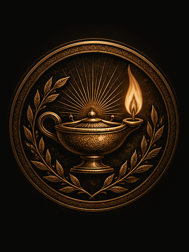

I
LUKE
Greek & Latin tradition · associated with light
Thoughtfulness and learning have long accompanied his name.
Observes carefully before reaching judgement.
Has compassion for those who suffer.
Seeks understanding rather than easy answers.
His name recalls Luke the physician, healer and chronicler.
Values truth and takes care in its telling.
Brings light through knowledge, compassion and understanding.
His tradition is one of healing, learning
and illuminating what is true.